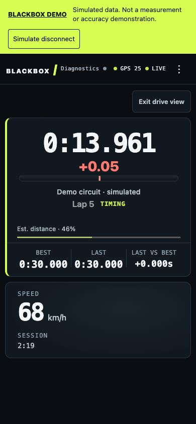

An open-source GPS lap timer and vehicle telemetry system. Build it on ESP32-C3. See your driving in a local browser dashboard. Keep your recordings yours.
From a live G-meter to a lap-by-lap reference, without an app or cloud account.
Real-time lateral and longitudinal g-forces with trail
Record tracks, time laps, delta-to-best display
IDLE, ACCEL, BRAKE, CORNER, and combined states
Runs in a modern browser on local Wi-Fi
GPS velocity and inertial measurements combined in Rust
MIT license, Rust firmware, modify freely
Record a circuit or stage, then arm timing. Drive view puts lap time, distance-based delta, and speed first. Keep the compact G-meter for setup, or expand it for analysis.

Illustrative values below. Live delta compares elapsed time at equal accumulated distance; it is not corner-matched coaching. Estimates are suppressed after detected gaps or invalid data.
One controller. Two sensors. A status LED. Start with the wiring guide.
Controller + Wi-Fi
Acceleration + orientation
NEO-6M or NEO-M9N
Device status
GPS model and update rate must match your firmware build. Check wiring and compatibility
Wire the ESP32-C3, WT901, GPS, and LED. Choose firmware for your GPS model and connect over USB.
Keep the unit still during calibration. Join its Wi-Fi, open the dashboard, and wait for a fresh GPS fix outdoors.
Record a circuit or stage, then select it to arm timing. Cross the start line in the recorded direction.
In active development. Timing accuracy depends on GPS reception, update rate, and line geometry. Validate your setup before relying on lap results. Setup and timing guide
For drivers who want to understand their tools as well as their laps. Inspect the firmware, export your CSV recordings, and shape the project with us.
Explore with simulated dataIt offers lap timing, live g-forces, local recording, and open firmware. Whether it fits your use depends on measured accuracy, installation, reliability, and support needs. We have not established parity with a commercial system. Use the hardware test checklist and compare results with an independent reference.
Yes. The interactive dashboard demo uses explicitly simulated telemetry. Try recording, saved data, lap feedback, and a connection interruption. Demo values do not demonstrate sensor accuracy.
The firmware targets ESP32-C3 with a 4 MiB flash image. Published candidates distinguish NEO-6M at 5 Hz and NEO-M9N at 25 Hz. Update rate is not timing accuracy, and board wiring matters: GPIO18/19 currently conflict with native USB. Read the compatibility FAQ.
Not yet. Progress is an estimated fraction of reference-lap distance, not a pinpoint track position. Automatic turn callouts need validated position matching and repeatable corner identification. See the measurement limits.
The project requires neither. The device serves its dashboard over local Wi-Fi, and browser recordings can be exported as CSV. Hardware costs, assembly, and validation are your responsibility.
Published release via USB. Use desktop Chrome or Edge with Web Serial.
Choose the GPS variant that matches your receiver. Release candidates contain newer fixes and still need hardware validation. Read release notes